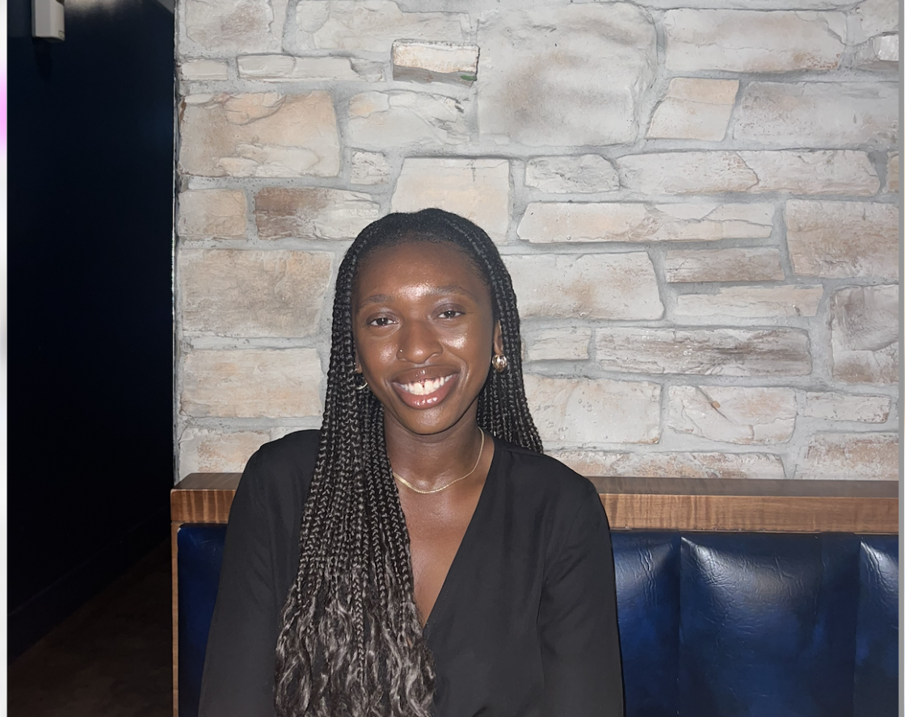
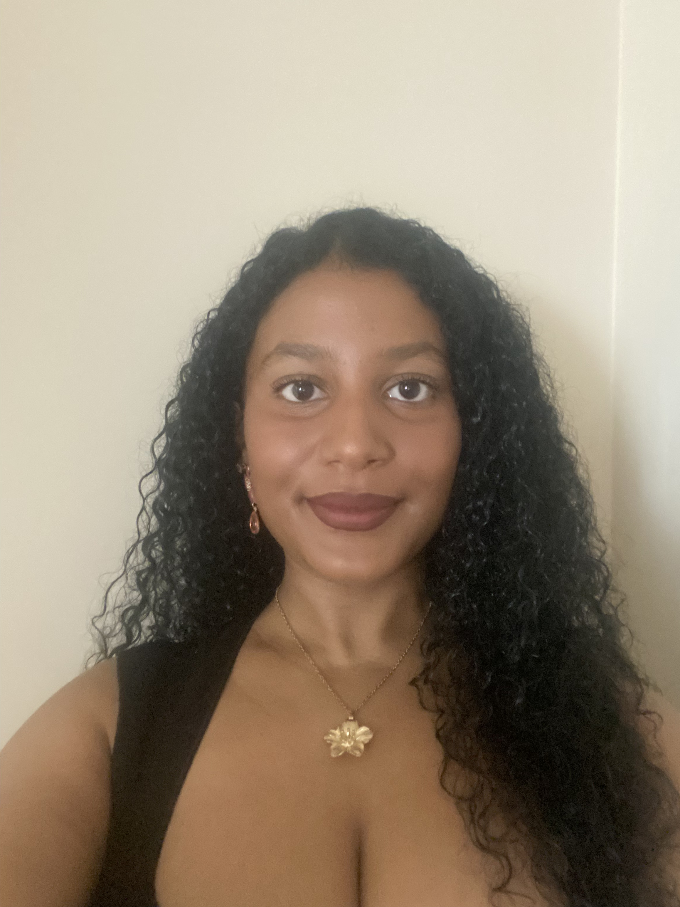

Deenah Wright
Deenah Wright is the founder of the Wright Lab and a Master’s student in Educational Psychology at McGill University. Her work focuses on mental health, resilience, and educational equity, with a particular interest in how systemic and social factors shape the developmental experiences of children and youth. She is currently involved in research examining adultification bias, forced resilience, literacy development, and child mental health interventions within clinical and educational settings. Alongside her research, Deenah has experience supporting children and adolescents through literacy programming, educational interventions, and crisis support initiatives. She is especially interested in culturally informed approaches to psychology and education, particularly as they relate to Black youth and underserved communities. Through the Wright Lab, she hopes to build collaborative research spaces that reimagine traditional approaches to mental health and education while creating opportunities for emerging student researchers.

Isabel Seleshi
Isabel Seleshi is a recent graduate of the University of Ottawa, where she has completed a degree in criminology and social sciences. Her studies and interest center social and crime constructions, systemic inequity and oppression, the management of “risky” populations and the brutality of the carceral complex. Of particular interest are the implications racism, inherent within formal institutions, have on Black communities (women and children especially). Isabel is an active member of the Ottawa Transformative Justice Collective, who through grassroots efforts address social harms non-punitively in the community. She hopes to pursue an interdisciplinary degree in social and criminal justice to critically examine how racism and inequitable social systems disproportionately impact marginalized communities’ lived experiences.
Sarah Francis
Sarah Francis is a recent graduate at University of Ottawa, with a Bachelor of Arts in Psychology with a minor in Linguistics. She is currently working as a research assistant and is interested in the intersection of psychology, language, and communication, with attention to psycholinguistics, language development, and youth mental health. Her academic and community involvement reflects her passion for language advocacy, mental health awareness, and supporting underrepresented communities. Sarah hopes to pursue graduate studies in Speech-Language Pathology while continuing research in psycholinguistics, with the long-term goal of improving language access and communication support for children and diverse populations.
Fehintola Sunmola
Fehintola Sunmola is a psychology student at the University of Ottawa, entering her final year of study. She is currently working as a research assistant and is interested in understanding how early life experiences shape developmental and mental health outcomes in children and youth. Her academic and volunteer work focuses on supporting young people through literacy development and crisis support. Fehintola is particularly interested in culturally informed approaches to mental health and hopes to pursue graduate studies in counselling or developmental psychology, with the long-term goal of contributing to research and interventions that support vulnerable youth.